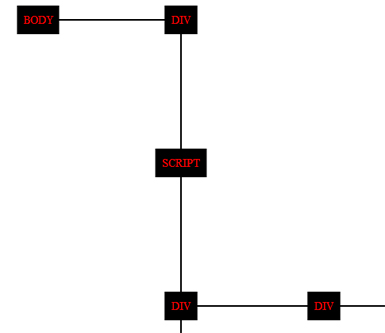
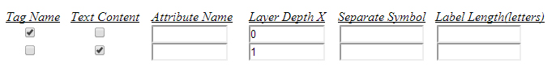
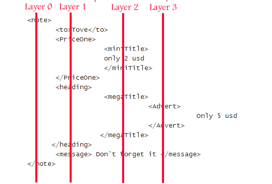

This tool accepts xml,html and xhtml structures and creates an svg tree output.Let's say that it gives visual appearence to the input through svg and its 100% stand-alone tool.You only need a broswer.
When you are working with large xml,html files witch include a lot of elements,parents and subElements.
If you want for example to manipulate dom with javascript or php,it may become exhausting for your eyes to check the DOM-flow through inspect element or by reading the xml based file directly.Personally this progress made me a couple of times to loose my concetration to the flow and trying to call a className,for example, with the wrong key.This tool just save some space on your mind which you were using to remember things about DOM and makes the DOM watching much easier for your eyes.
If you are a project manager of a complex sql system and you need to explain the interaction between tables to your developers,make an xml and show them the generated graph from this tool.
Do the same to teach system's functionality to a new employer.
If you are a teacher in computer science use this tree-graphs to explain to your students the inheritance in programming.
If you want to import xml go to 'xml-trees' folder and open the 'xml_trees.html'
If you want to import html go to 'html-trees' folder and open the 'html_trees.html'
The only difference between them is that 'html-trees.html' makes use of some functions to clear your input from all html-comments,script tags and void-elements(Void elements are the elements which can not havr childNodes,like <br>)
The html file is the main page of the application.At the first stage ,we can see there a textarea, 2 buttons, 4 input fields with predefined values, 6 underlined labels and some very important notes. The design is very simple and flexible.If your broswer allows you to temporary change the dimensions of the textarea by clicking and moving the right bottom corner, the other page elements will be moved in new positions but they will be still clear.Try to maximize textarea's dimensions if it suits more confortable in your eyes.You can change the default dimensions of textare if you chance width and height properties in css file.
#inputForJsTree{
float:left;
width:493px;
height:145px;
}
To explain more about input fields,labels and buttons you need to have an idea of how the output looks like.Take a look below
 The 4 input fields:text-size,sceleton color,text-color and ratio affect only the output.
Sceleton color- is the color of the black lines.
Ratio- is the distance between the elements, the length of every black line.Ratio is standard and applies both to vertical and horizontal lines.
Text color- is the color of red text in the example.
Text-size- is the Font size.Of course you can have your font-size in em.Px is the default.
Remember that you can not have every color you like in text like 'black','red' etc.You will need to put the hex code or rgb code of some colors.RGB or HEX codes for every color you can find in the web without spend time.There are tables with all color codes.
Lets continue with the buttons.After you have pasted your xml in the textarea there are still 3 steps.
Step 1: Your data must be analysed.
Step 2: Some new options will appear about the output.3 input fields and 2 checkboxes.These are optional
Step 3: Ready for Graph.
The 'Start' button starts STEP 1.It analyses your data and opens the new options according to your data.
The 'Create Graph' button starts STEP 3 and creates the output.
Graph cannot be created without Step 1 and Step 2.
i)Paste it in the textarea.
<note>
<to>Tove</to>
<from>Jani</from>
<heading>Reminder</heading>
<message>Don't forget me this weekend!</message>
</note>
You need to be carefull of what you put inside textarea.Always follow these rules to avoid cause error or application misbehavior.
<root>
<child>
<subchild>.....</subchild>
</child>
</root>
ii)Change text-color,text-size,sceleton color and ratio if you dont like the default values.
iii)Press 'START' button
After "START" button will have finished its job and data analysis will be completed you will see something like the image below. The number of these checkboxes and inputs depends of the LAYER DEPTH X of your data. Its layer has its own 2 checkboxes and 3 inputs
So lets explain what LAYER DEPTH X means.While you can see its value inside an input field,you must know that it's not editable.Its a read-only value which helps you fill the other fields.
In our xml example there are 2 layers.The layer 0 and the layer 1. So how does it count??
LAYER DEPTH X is the number of layer of your xml/html elements.When an element has chilren a new layer is been created.In our example the element "note" has 4 children but none of the children has children.So as we start from layer 0, we continue to layer 1 and we stop,because none of elements of layer 1 has children. So the maximum layer number is '1'.
Every element or every group of elements belong to one and only one layer. The "Note" Element belongs to layer 0, the "to","from","heading" and "message" elements belong to layer 1.
Lets see a different example
<note>
<to>Tove</to>
<from>
<child>
brian
</child>
</from>
<heading>Reminder</heading>
<message>Don't forget me this weekend!</message>
</note>
in the example above there are 3 layers.Layer 0 starts with "note",layer 1 starts because "note" has children and layer 2 starts because "from" has at least one element as child,the element "child".
So the "Note" Element belongs to layer 0, the "to","from","heading" and "message" elements belong to layer 1 and the "child" element belongs to layer 2
Lets close the tutorial about "layers" with one last example
<note>
<to>Tove</to>
<PriceOne>
<miniTitle>
only 2 usd
</miniTitle>
</PriceOne>
<heading>
<megaTitle>
<Advert>
Only 5 usd
</Advert>
</megaTitle>
</heading>
<message> Don't forget it </message>
</note>
See below how elements belong to layers.. Have this image in your mind to avoid confusion
Lets explain now what we can see in this image
Look checkboxes and input fields horizontal.
The first row affects all the elements in layer 0.
The second row affects all the elements in layer 1, etc
With this menu you can affect the labels of elements in the output.In simple words, you can affect what text will be printed the svg output.
Take again the example below
<note>
<to age="18">Tove</to>
<from age="19">Jani</from>
<heading>Reminder</heading>
<message>Don't forget me this weekend!</message>
</note>
Tag Names:-"note","to","from","heading","message". TagName its the text between < and >. Every element has a tagname.Check the box if you want tagNames to appear in svg output.
Text contents:-Some elements may have text content.In this example,element with tag name"to" has the text content "Tove", element with tagname "from" has the text content "Jani"etc. But has the element with tagName "note" any text contents?? Yes it has. It contains all text contents of its children.So its text content is "Tove","Jani","Reminder" and "Don't forget me this weekend!".Be carefull with that.If you want to print text contents of elements,always choose the layer with the higher depth X.
Attribute Name:-Some elements may have one or more attributes. The element with tagName "to" has the attribute "age".If you want to print the value of a specific attribute(18 in example) in the graph, type the name of the attribute in the "Attribute Name"field.
Separate Symbol:-I added this in case you want to print more than one thing.For example if you want to print tagname and text content of element with tagName "to".The output will look like to#Tove, if you have choosen the "#" as "separate symbol"
Label length:-This is the last.Have in mind that this tool is for short labels.By filling this field with the value "6" for example ,you command the code to give you label names with 6 letters.It will cut the rest. A good solution if you want to print labels with large length is to give to text-size a smaller value and set a higher ratio.
There is only one javascript file full of custom functions
The code has 3 basic stages
The code has very common syntax.You need to pay more attention to logic than the syntax of code.
Lets start....
The logic is:
a)Take the input(xml,html or xhtml) from user
b)Put it in a HIDDEN div.
c)Parse the input with dom methods.
d)Do some maths and compute the depth x and y of each element.
e)If we have depth x and y of each element, it is easy to multiply them all with a standar number and build the svg
But there is a problem here.. How we can parse xml html and xhtml with the same parser??.XML parser of javascript is different than html parser.Definitely html parser is richer and we can do more things,faster and with less lines of code.I wanted to take advantage of the html parser, so the application can have the best possible perfomance.
The first thing we must do is to take care of the existance of tagNames which match with predefined html tags.For example what will happen if user import xml that has tagNames like "body" and "head".The rules of html synxtax don't allow more than one "body" tag.Broswer will totally ignore the second "body" tag. To solve these kind of problems i made use of some of the broswers abilities.
--Broswers allow custom tags and Internet explorer also! They treat them as span elements. Specially Google released Angular.js which promotes custom tags!!
--So it is ok if we rename the tagNames of the user to "tagName^" In our example <body> tag has a special meaning in broswers, but <body^> means nothing
The first line of code is an array with all predefined html tags.We loop every tagname of user's input and we test if matched to an element of this array.If it matches we will rename it, adding the "^" symbol at the end of it.
var tagRepl = ["<!DOCTYPE>", "<a>", "<abbr>", "<acronym>".....];
for(var cu=0;cu<tagReplLen;cu++){
var regA = new RegExp(tagRepl[cu],"gim");
var regB = new RegExp("<\/"+tagRepl[cu].substring(1),"gim");
var regC = new RegExp(tagRepl[cu].substring(0,tagRepl[cu].length-1)+"\\s","gim");
if(regA.test(scrsource)){
scrsource = scrsource.replace(regA,tagRepl[cu].substr(0,tagRepl[cu].length-1)+'^>');
}
if(regB.test(scrsource)){
scrsource = scrsource.replace(regB,'');
}
if(regC.test(scrsource)){
scrsource = scrsource.replace(regC,'<'+tagRepl[cu].substr(1,tagRepl[cu].length-2)+'^ ');
}
}
The second problem is the attribute with name "id".Broswers allow also an element to have the same id with another element.The only problem is with javascript command "document.getElementByID("SOMETHING") and with external or internal stylesheets
The above problem will appear if the user's xml data have the same id with the ids of the main html page of the application.Hard to happen and it is not impossible.The problem easily solved by putting in comments the import of the user.
After checking for predefined tags.Script puts the user's data in the DIV element with id="fff" and it comments its content.
Below you can see the part of code which makes them comment and removes comment for analyze.
MakeThemComment(){
var contentCustom = document.getElementById("fff").innerHTML;
document.getElementById("fff").innerHTML="<!--aDeadDivs"+contentCustom+"aDeadDivs-->";
}
function MakeThemUnComment(){
var theInnerContx = document.getElementById("fff").innerHTML;
document.getElementById("fff").innerHTML=theInnerContx.substring(13,theInnerContx.length-13);
}
At this part we have succeeded to import the xml or html data inside a DIV as children.The input is ready for analysis.
Function with name EXPLODE is a recursive function and computes the depth X and Depth Y of each element inside the hidden div with id="fff"
When analysis is completed. The addCustomOptions() function is called to create these options Output Options based on the number of layers.
Now every element inside the DIV with id="fff" has a x and a y attribute.Its time to build the output.
The building of output is a job for the function graaaa(foCol,foSiz,sceCol,ratio) foCol=font-color, foSize=text-size,sceCol=Sceleton Color, Ratio=ratio.
This function has 3 stages.
a)Call the function graphTag(); to create an svg element and put it as hidden child to the document.
b)loop every child of element with id="fff"
c)detect the number of sub-children of every element to compute the x,y of every single line.
d)Call the function graph(x1,y1,x2,y2,sceCol); to create a line tag and add it to svg from step a.
e)build a text element for every element.This text will be the label of the element.
f)build a box for every element.The box will be behind the text to make the output prettier.
The last part of code just take the hidden element div which contains the svg code form step a) above and puts it to a new window.It also adds a function which will be called when you mouse over the SVG Labels.This function will create a div with information about the element you hover, like attributes and tagName
var newWindow = window.open();
newWindow.document.write(document.getElementById("graphContent").innerHTML);
newWindow.document.close();